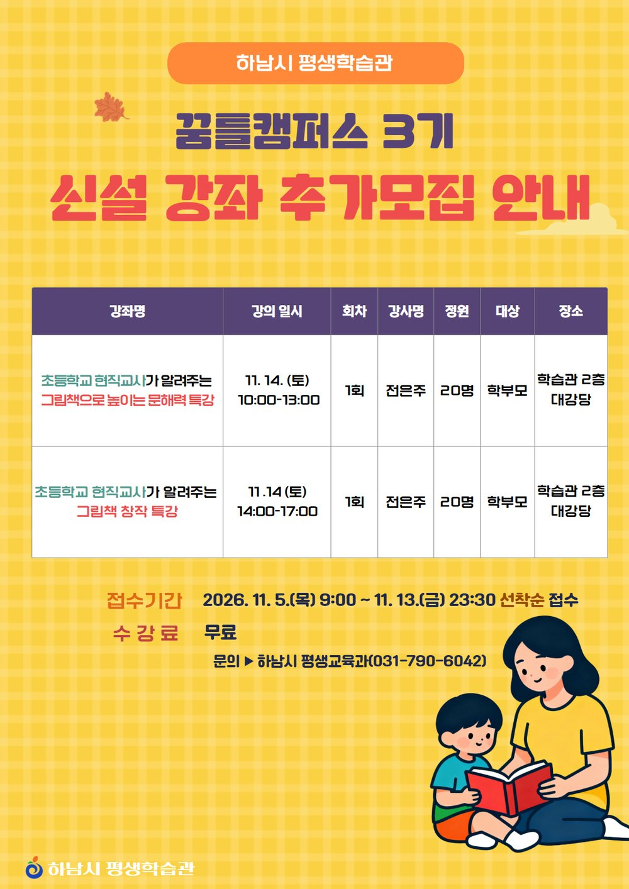
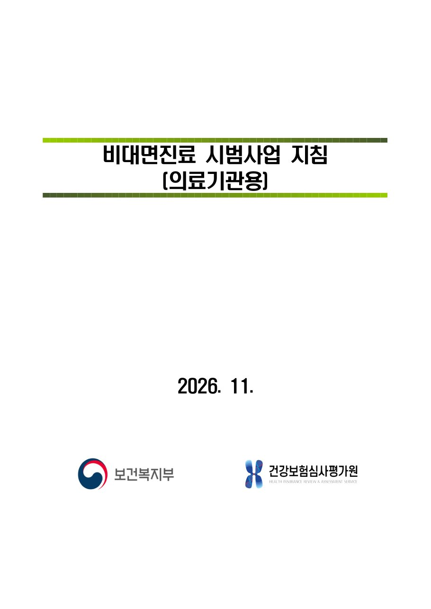

73호 | 2026년 11월 5일 발행
📌 이번 호 주요 목차
 우리동네 국회의원 이광재
우리동네 국회의원 이광재
📝 현장일지
이광재의원, "빚 대신 지분으로… 적금처럼 조금씩 내 집 몫을 늘려 가면 됩니다"
• 821조 원 규모 내년도 예산안 심사 본격 시작, 예결위원장으로 전체회의에서 모두발언
• 분양가 25%만 내고 입주해 20년간 4년마다 지분 15%씩 사들이는 지분적립형 공공분양, 12월 고양창릉에서 첫 공급
• 하남 교산 신혼부부 적금주택 약속, 국정감사 질의, 정부 제안 등 오래 주장해 온 주택 제도
• 대출 하나뿐인 내 집 마련 대신 소득에 맞춰 지분을 늘려 가는 해법
• 예산뿐 아니라 연기금·국공유재산·공기업 자산·정책금융까지 함께 보자고 위원들에게 당부
• 분양가 25%만 내고 입주해 20년간 4년마다 지분 15%씩 사들이는 지분적립형 공공분양, 12월 고양창릉에서 첫 공급
• 하남 교산 신혼부부 적금주택 약속, 국정감사 질의, 정부 제안 등 오래 주장해 온 주택 제도
• 대출 하나뿐인 내 집 마련 대신 소득에 맞춰 지분을 늘려 가는 해법
• 예산뿐 아니라 연기금·국공유재산·공기업 자산·정책금융까지 함께 보자고 위원들에게 당부
📌 출처: 이광재 공식 네이버 블로그
📰 언론보도
[뉴스핌] 이광재의원, 821조 예산안 심사 시작… "예산만 보지 말고 국가 자산까지 함께 봐야"
이광재 국회 예산결산특별위원장이 4일 국회에서 열린 예결위 전체회의에서 발언했습니다. 이날 회의를 시작으로 821조 원 규모의 내년도 예산안 심사가 본격화됐습니다. 이 위원장은 모두발언에서 위원들에게 예산만 보지 말고 연기금과 국공유재산, 공기업 자산, 정책금융까지 함께 살펴보자고 당부했습니다. 국가가 가진 자산을 지렛대 삼아 국민이 스스로 자산을 쌓도록 돕는 '버는 국가'로 가자는 취지로, 같은 날 발표된 지분적립형 공공분양도 그런 해법의 하나라고 강조했습니다.
📌 출처: 뉴스핌 (이건주 기자)
📰 하남 지역 주요 뉴스
🎭 시의회
"이름만 문화의 거리"… 김어진 시의원, 미사문화거리 활성화 대책·2027년 콘텐츠 예산 촉구
하남시의회 김어진 의원(더불어민주당, 비례대표)이 5분 자유발언에서 미사문화거리가 시설 정비에만 그쳤다며 실질적인 활성화 대책을 촉구했습니다. 미사문화거리는 2022년 미사역 일대에 지정된 하남시 제1호 문화의 거리로, 국·도비 12억 원을 들여 수목·조형물·시계탑 등을 정비했습니다. 그러나 문화의 거리 육성위원회는 올해 한 번 열려 보도·화단 공사 계획만 보고받았다고 지적했습니다. 김 의원은 연간 운영계획 수립, 상인들이 제안한 '빛의 거리' 등 시민 제안 반영, 2027년 문화 콘텐츠 예산 편성을 요구했습니다.
📌 출처: 투데이광주하남 (이규웅 기자)
🚒 도의회
강성삼 도의원, '경기도 의용소방대 활성화' 정책연구 착수… 고령화·처우개선 해법 찾는다
경기도의회 안전행정위원회 강성삼 의원(더불어민주당, 하남2)이 회장을 맡은 '경기도 의용소방대 발전 방안 정책 연구회'가 3일 경기도의회에서 정책연구용역 착수보고회를 열었습니다. 연구는 대원 고령화와 신규 대원 확보난, 열악한 활동 여건을 분석해 인력 확보, 정년·활동수당 등 처우개선, 지역별 운영체계 개선, 재난대응 전문성 강화 방안을 찾습니다. 강 의원은 "연구 결과를 토대로 조례 개정과 제도개선, 예산 지원 등 구체적인 정책과제를 발굴하겠다"고 밝혔습니다.
📌 출처: 뉴스투데이24
💬 하남 맘카페 HOT 이슈
이번 주 하남 지역 맘카페(미사맘스클럽, 하남교산맘, 교산살래, 미사한강이야기 등)에서 많이 오르내린 HOT 이슈 TOP 3입니다.
1️⃣ [철도] "청원 1만 명 넘기니 답이 왔네요"… 9호선 강동하남남양주선 2·5공구, '연내 계약방식 결정'
현황: 네 차례 유찰로 멈춰 있던 9호선 강동하남남양주선 2·5공구를 두고 경기도지사의 답변이 나오자 하남·남양주 카페에 관련 글이 잇따랐습니다. 수의계약을 통한 조기 착공과 '선교통 후입주' 이행을 요구한 경기도민 청원이 1만 262명의 동의를 얻었고, 추미애 경기도지사는 3일 답변에서 "방안이 준비되면 올해 안에 가장 신속하고 합리적인 계약방식을 결정하고 조기 착공에 속도를 내겠다"고 밝혔습니다. 카페에는 답변 전문을 공유하는 글과 함께, 미사·감일2 신규택지와 지하철 가운데 어느 쪽이 먼저 닿을지 일정을 지켜보겠다는 글도 올라왔습니다.
💡 주민 포인트: 지난 10월 14일 이광재(하남갑)·김용만(하남을)·김용민(남양주병) 국회의원이 지역 도의원들과 함께 경기도에 '2·5공구 수의계약 조속 추진 건의문'을 전달했습니다. 이어 10월 26일 전문가와 하남시·남양주시가 참여한 간담회에서 수의계약이 착공·개통 시기를 앞당기고 사업비 증가 위험도 줄일 수 있다는 장점이 확인됐습니다. 연내 계약방식 결정 뒤 설계심의와 가격 적정성 검토 일정을 함께 지켜봐 주세요.
💬 주민 반응: 반가운 소식이라는 반응과 함께, 이번에는 일정이 더 밀리지 않도록 '선교통 후입주' 약속을 꼭 지켜 달라는 목소리가 많았습니다.
📌 출처: 네이버 카페 (부동산 스터디, 왕숙모먼트, 다산신도시 연합카페, 한강미래연합)
2️⃣ [교통] "우리 동네 교통 호재 기대"… 서울~하남~양평고속도로 3년 만에 재추진, 교산·감일 카페 '관심'
현황: 2023년 7월 노선 논란으로 백지화됐던 서울~양평고속도로가 3년여 만에 다시 추진된다는 소식이 교산·감일 카페에 잇따라 공유됐습니다. 국토교통부는 신규 타당성조사에 착수하고 4일 민관 협의체와 함께 착수보고회를 열었습니다. 하남시와 양평군을 잇는 총연장 27㎞, 왕복 4차로 고속도로로, 기존 예비타당성조사 노선과 논란이 된 대안까지 원점에서 다시 검토해 내년 하반기까지 최적 노선안을 마련할 계획입니다. 하남교산맘 카페에는 미사·교산·위례 주민들이 서울과 남양주, 양평 쪽으로 오가기 한결 편해질 것이라는 기대 글이 올라왔습니다.
💡 주민 포인트: 민관 협의체에는 하남시를 비롯해 서울시·경기도·송파구·광주시·양평군 공무원과 도로·교통·환경 분야 민간 전문가가 참여해 조사 단계마다 진행 상황을 공유합니다. 최적 노선안이 나오는 내년 하반기 전후로 하남 구간의 노선과 나들목(IC) 계획을 눈여겨봐 주세요.
💬 주민 반응: 교통 호재를 반기는 글이 많았고, 이번에는 논란 없이 일정대로 끝까지 추진되기를 바란다는 의견도 이어졌습니다.
📌 출처: 네이버 카페 (하남교산맘 NO1, 교산살래, 교산신도시 부동산정보, 좋은예감 일등도시 감일스윗시티)
3️⃣ [유치원] "병설유치원이 인기 없는 편인가요?"… 내년 유치원 지원·어린이집 확정 문자에 엄마들 고민
현황: 내년 신학기 유치원 지원 시즌을 맞아 미사맘스클럽에 유치원 고민 글이 하루에도 여러 건씩 올라왔습니다. "집에서 가장 가까운 곳이 병설이라 1순위로 넣었는데 병설은 인기가 없는 편이냐"는 질문, 단설 유치원에 관심이 있지만 맞벌이라 하원 이후가 걱정이라는 사연, 사립유치원 모집요강의 우선순위를 묻는 글이 이어졌습니다. 어린이집 입소 확정 문자를 받았는데 등록 기간이 유치원 우선모집 결과 발표 뒤라 어디로 보낼지 고민된다는 글, 숲 어린이집과 유치원 사이에서 망설인다는 글도 올라왔습니다.
💡 주민 포인트: 국공립(단설·병설)과 사립 유치원은 모두 '처음학교로'(www.go-firstschool.go.kr)에서 지원하고 결과도 확인합니다. 맞벌이 가정이라면 유치원별 방과후과정 운영 시간과 통학버스 여부를 미리 확인하고, 어린이집 입소 확정 뒤에는 등록 마감일을 꼭 챙겨 두세요.
💬 주민 반응: 같은 고민을 하는 부모들이 많아, 다니는 유치원·어린이집 경험담과 지원 정보를 나누는 글이 이어졌습니다.
📌 출처: 네이버 카페 (미사강변도시 미사맘스클럽, 미사한강이야기)
🎭 ALL IN 하남라이프
2026년 11월 5일 기준 한눈에 보는 하남시 최신 문화·행사·교육 안내 가이드
🔐 11.14(토) 13:00~17:00 | 하남시청소년수련관 · 11.5(목) 11시부터 선착순 접수
[청소년수련관] "수련관 곳곳에 숨은 비밀 문장을 찾아라!"… 청소년기획단 이벤트 '비밀의 수련관, 탈출하남!'
"게임과 미션을 풀고 비밀 문장을 완성해 탈출하세요"
하남시청소년수련관 청소년기획단이 준비한 방탈출형 이벤트입니다. 눈 가리고 과자 맞히기, 암호 해독, 반대로 말하기, 사진 속 숨은 글자 찾기 미션을 모두 성공하면 호빵과 수련관 2027년 달력(교환권)을 받습니다.
🗓 일시: 2026년 11월 14일(토) 1부 13:00 / 2부 14:00 / 3부 15:00 / 4부 16:00 (회차별 40분, 1개 회차만 선택)
📍 장소: 하남시청소년수련관 1층 YES카페 폴딩도어 (조정대로 111)
👥 대상: 하남시 청소년 9세(초3)~24세, 총 100명 (회차별 25명)
✍️ 신청: 11월 5일(목) 11:00부터 ~ 11월 12일(목)까지 온라인 신청폼 · 선착순 (신청이 몰리면 조기 마감)
☎️ 문의: 하남시청소년수련관 031-760-5800
하남시청소년수련관 청소년기획단이 준비한 방탈출형 이벤트입니다. 눈 가리고 과자 맞히기, 암호 해독, 반대로 말하기, 사진 속 숨은 글자 찾기 미션을 모두 성공하면 호빵과 수련관 2027년 달력(교환권)을 받습니다.
🗓 일시: 2026년 11월 14일(토) 1부 13:00 / 2부 14:00 / 3부 15:00 / 4부 16:00 (회차별 40분, 1개 회차만 선택)
📍 장소: 하남시청소년수련관 1층 YES카페 폴딩도어 (조정대로 111)
👥 대상: 하남시 청소년 9세(초3)~24세, 총 100명 (회차별 25명)
✍️ 신청: 11월 5일(목) 11:00부터 ~ 11월 12일(목)까지 온라인 신청폼 · 선착순 (신청이 몰리면 조기 마감)
☎️ 문의: 하남시청소년수련관 031-760-5800
📌 출처: 하남시청소년수련관 (청소년활동팀)
📚 11.14(토) | 하남시 평생학습관 · 접수 11.5(목) 9:00 ~ 11.13(금) 23:30 · 무료
[평생학습관] 초등 현직교사가 알려주는 그림책 특강 2종… 꿈틀캠퍼스 3기 신설 강좌 추가모집
"그림책으로 아이의 문해력과 상상력을 키워요"
하남시 평생학습관이 꿈틀캠퍼스 3기에 학부모 대상 그림책 특강 2개를 새로 열고 수강생을 추가 모집합니다. 초등학교 현직교사인 전은주 강사가 오전에는 문해력, 오후에는 그림책 창작을 주제로 강의합니다.
🗓 일시: 2026년 11월 14일(토) 10:00~13:00 「그림책으로 높이는 문해력 특강」 / 14:00~17:00 「그림책 창작 특강」 (각 1회)
📍 장소: 하남시 평생학습관 2층 대강당
👥 대상: 학부모 · 강좌별 20명
💰 수강료: 무료
✍️ 접수: 11월 5일(목) 9:00 ~ 11월 13일(금) 23:30 · 하남시 평생학습포털 선착순
☎️ 문의: 하남시 평생교육과 031-790-6042
하남시 평생학습관이 꿈틀캠퍼스 3기에 학부모 대상 그림책 특강 2개를 새로 열고 수강생을 추가 모집합니다. 초등학교 현직교사인 전은주 강사가 오전에는 문해력, 오후에는 그림책 창작을 주제로 강의합니다.
🗓 일시: 2026년 11월 14일(토) 10:00~13:00 「그림책으로 높이는 문해력 특강」 / 14:00~17:00 「그림책 창작 특강」 (각 1회)
📍 장소: 하남시 평생학습관 2층 대강당
👥 대상: 학부모 · 강좌별 20명
💰 수강료: 무료
✍️ 접수: 11월 5일(목) 9:00 ~ 11월 13일(금) 23:30 · 하남시 평생학습포털 선착순
☎️ 문의: 하남시 평생교육과 031-790-6042

📌 출처: 하남시 평생학습관 (평생교육과)
🏛️ 공공기관 소식지
2026년 11월 5일 기준 하남시 공공기관 주요 공고·신청 안내입니다.
💊 하남시보건소 보건정책과 | 11.1(일)부터 시행
비대면진료 지침 개정 — 비만치료제 '에페글레나타이드'도 비대면 처방 금지 목록에 추가
"비만치료제는 비대면진료로 처방받을 수 없어요"
보건복지부가 비만치료 신약 '에페'(한미약품) 허가에 맞춰 「비대면진료 시범사업 지침」을 개정했고, 하남시보건소가 관내 의료기관에 안내했습니다.
🗓 시행: 2026년 11월 1일(일)부터
💊 변경: 비대면 처방금지 비만치료제에 '에페글레나타이드' 성분 추가 → 리라글루티드·세마글루티드·터제파타이드(비만치료 목적), 오르리스타트, 부프로피온·날트렉손 복합제와 함께 6개 성분
🚫 그 밖의 처방금지: 마약류, 오·남용 우려 의약품(22개 성분), 사후피임약
📱 진료 방식: 화상진료가 원칙, 화상이 어려우면 음성전화만 예외 허용 · 문자·메신저만으로는 진료 불가
☎️ 문의: 하남시보건소 보건정책과 031-790-6551
보건복지부가 비만치료 신약 '에페'(한미약품) 허가에 맞춰 「비대면진료 시범사업 지침」을 개정했고, 하남시보건소가 관내 의료기관에 안내했습니다.
🗓 시행: 2026년 11월 1일(일)부터
💊 변경: 비대면 처방금지 비만치료제에 '에페글레나타이드' 성분 추가 → 리라글루티드·세마글루티드·터제파타이드(비만치료 목적), 오르리스타트, 부프로피온·날트렉손 복합제와 함께 6개 성분
🚫 그 밖의 처방금지: 마약류, 오·남용 우려 의약품(22개 성분), 사후피임약
📱 진료 방식: 화상진료가 원칙, 화상이 어려우면 음성전화만 예외 허용 · 문자·메신저만으로는 진료 불가
☎️ 문의: 하남시보건소 보건정책과 031-790-6551

📌 출처: 하남시보건소 (보건정책과)
🚶 하남시보건소 건강증진과 | 10.29(목) ~ 11.17(화)
'11월 11일 보행자의 날' 기념 111,111걸음 챌린지 — 달성자 300명 추첨해 손난로 보조배터리
"20일 동안 111,111걸음, 지금 시작해도 늦지 않아요"
하남시보건소가 보행자의 날(11월 11일)을 맞아 '워크온' 앱으로 걷기 챌린지를 진행합니다.
🗓 기간: 2026년 10월 29일(목) ~ 11월 17일(화) 20일간
👥 대상: 스마트폰이 있는 하남시민 누구나
🎯 목표: 기간 내 누적 111,111걸음 (하루 최대 9,000걸음까지 인정)
🎁 상품: 목표 달성자 중 300명 추첨, 손난로 보조배터리
📱 참여: 워크온 앱 설치 → [하남시] '걷기실천 도약하는 하남시민 모여라' 커뮤니티 가입 → 챌린지 [참여하기]
⚠️ 유의: 목표 달성 후 쿠폰 [응모하기]까지 눌러야 응모 완료 · 상품 배송지는 하남시 관내만 가능
💡 팁: 오늘(11.5)부터 시작해도 하루 9,000걸음씩 13일 걸으면 117,000걸음으로 목표 달성!
하남시보건소가 보행자의 날(11월 11일)을 맞아 '워크온' 앱으로 걷기 챌린지를 진행합니다.
🗓 기간: 2026년 10월 29일(목) ~ 11월 17일(화) 20일간
👥 대상: 스마트폰이 있는 하남시민 누구나
🎯 목표: 기간 내 누적 111,111걸음 (하루 최대 9,000걸음까지 인정)
🎁 상품: 목표 달성자 중 300명 추첨, 손난로 보조배터리
📱 참여: 워크온 앱 설치 → [하남시] '걷기실천 도약하는 하남시민 모여라' 커뮤니티 가입 → 챌린지 [참여하기]
⚠️ 유의: 목표 달성 후 쿠폰 [응모하기]까지 눌러야 응모 완료 · 상품 배송지는 하남시 관내만 가능
💡 팁: 오늘(11.5)부터 시작해도 하루 9,000걸음씩 13일 걸으면 117,000걸음으로 목표 달성!
📌 출처: 하남시보건소 (건강증진과)
© 2026 우리동네 진짜일꾼 이광재